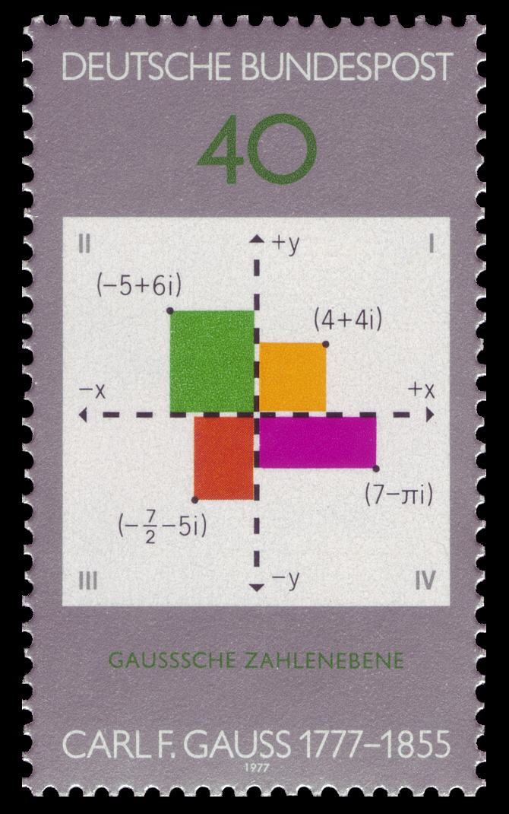

3 Définition des nombres complexes
\[ \newcommand{\R}{\mathbb{R}} \newcommand{\Q}{\mathbb{Q}} \newcommand{\C}{\mathbb{C}} \newcommand{\N}{\mathbb{N}} \newcommand{\Z}{\mathbb{Z}} \newcommand{\zbar}{\overline{z}} \newcommand{\RE}{\textrm{Re}\,} \newcommand{\IM}{\textrm{Im}\,} \newcommand{\Arg}{\textrm{Arg}\,} \newcommand{\iu}{\textrm{i}} \newcommand{\eu}{\textrm{e}} \newcommand{\boitevide}{\square} \]
Définition 3.1: Unité imaginaire
En sciences physiques, plus particulièrement dans le domaine du génie électrique, le symbole \(\textrm{j}\) est utilisé pour représenter l’unité imaginaire. Cela est pour éviter toute confusion possible avec l’intensité d’un courant électrique, qui est souvent représentée par la lettre \(\iu\).
Plusieurs commentaires s’imposent après une telle définition. D’abord, elle se place en opposition avec un fait relayé depuis le secondaire : un nombre, multiplié par lui-même, ne peut donner une quantité strictement inférieure à \(0\). Cela s’observe notamment en regardant le graphe de la fonction \(f(x)=x^2\). Votre étonnement face à cette nouvelle définition est légitime ; on pourrait le comparer à celui vécu par les Grecs lorsqu’ils ont été obligés d’admettre que la longueur de l’hypoténuse d’un triangle rectangle dont les deux cathètes mesurent une unité n’était pas un nombre, en vertu du sens attribué à ce concept.
L’arrivée de cet objet mathématique dans le cercle des nombres ne doit pas perturber les lois de l’arithmétique ; sommes et produits faisant intervenir ce nouvel arrivant doivent être bien définis. Si \(a\) et \(b\) sont des nombres réels, alors \(b\iu\) doit être un nombre (le produit de deux nombres est un nombre), tout comme \(a+b\iu\) (la somme de deux nombres est un nombre). Cela nous conduit à la définition 3.2.
Définition 3.2: Nombre complexe
Il n’y a plus de place sur la droite numérique pour ces nombres, contrairement aux éléments des ensembles \(\N,\Z,\Q\) et \(\R\). Puisque deux nombres réels sont nécessaires pour définir un nombre complexe, il est naturel d’associer à chaque nombre complexe un couple de nombres réels, et de les représenter dans un plan. Il convient alors de définir l’égalité de deux nombres complexes de la manière suivante :
Définition 3.3: Égalité de deux nombres complexe
3.1 Somme de deux nombres complexes
Un nombre complexe est défini à partir de deux nombres réels et de l’unité imaginaire. Lorsqu’on veut faire référence à un nombre complexe, il n’est pas nécessaire de le nommer à partir des éléments qui le définissent. Par exemple, on peut dire: Soit \(z\) un nombre complexe. De cela il faut comprendre qu’on peut trouver deux nombres réels \(a\) et \(b\) tels que \(z=a+b\,\iu\). Cela étant dit, étant donné deux nombres complexes, comment la somme de ceux-ci peut-elle être définie afin que les lois de l’arithmétique soient valides? En s’inspirant de l’opération d’addition des vecteurs, nous pouvons définir l’addition de nombres complexes.
Définition 3.4: Somme de deux nombres complexes
Exemple 3.1
De la même manière, la différence entre \(z_1\) et \(z_2\), notée \(z_1-z_2\), est le nombre complexe défini par \[z_1-z_2=x_1-x_2+(y_1-y_2)\iu.\]
Exemple 3.2

On constate que l’opération d’addition est commutative. En effet, cela est une conséquence de la commutativité de l’opération d’addition définie sur les nombres réels : on a bien que \(x_1+x_2=x_2+x_1\), quels que soient les nombres réels \(x_1\) et \(x_2\). De la même manière, l’associativité de l’addition des nombres réels implique l’associativité de l’addition des nombres complexes. Ainsi, \[z_1+(z_2+z_3)=(z_1+z_2)+z_3\quad\forall z_1,z_2,z_3\in\C.\] On peut donc parler de la somme de trois nombres complexes en toute impunité et la noter \(z_1+z_2+z_3\). Comme c’est aussi le cas dans l’ensemble des nombres réels, l’opération de soustraction n’est ni associative ni commutative. On ne doit pas s’étonner de ça l’ensemble des nombres complexes contient l’ensemble des nombres réels.
3.2 Parties réelle et imaginaire
Un nombre complexe est entièrement déterminé par un couple de nombres réels. Réciproquement, un couple de nombre réels détermine un unique nombre complexe. Il y a donc une bijection entre les éléments de \(\R^2\) et ceux de \(\C\).
Définition 3.5: Partie réelle
Remarques 3.1
- Étant donné un point \((x,y)\) dans le plan, le nombre complexe \(x+y\,\iu\) s’appelle l’affixe du point \((x,y)\).
- Si un nombre complexe peut s’écrire comme \(b\iu\), où \(b\in\R\), on dit qu’il est un nombre complexe imaginaire pur, ou encore purement imaginaire.
- Lorsqu’on dit d’un nombre qu’il est imaginaire, cela sous-entend que l’on considère un nombre complexe dont la partie imaginaire est non nulle.
- Au lieu d’écrire \(1\iu\) et \(-1\iu\), on écrit \(\iu\) et \(-\iu\) respectivement.
La partie imaginaire d’un nombre complexe est toujours un nombre réel.
3.2.1 Produit de deux nombres complexes
Considérons deux nombres complexes \(a+b\iu\) et \(c+d\iu\). Le produit de ces deux nombres reste à définir. Contrairement à l’addition de vecteurs, qui permet de définir la somme de nombres complexes de manière analogue, l’algèbre linéaire élémentaire ne nous fournie pas de multiplication vectorielle qui associe un vecteur du plan à deux vecteurs du plan. En effet, le produit scalaire de deux vecteurs a pour résultat un nombre réel, alors que le produit vectoriel de deux vecteurs donne un vecteur qui est perpendiculaire au plan engendré par les deux vecteurs dont on calcule le produit. Pour définir l’opération de multiplication de deux nombres complexes, nous allons appliquer certaines propriétés que nous aimerions voir vérifiées lorsqu’une multiplication est effectuée,: \[\begin{align*} (a+b\iu)(c+d\iu)&=(a+b\iu)c+(a+b\iu)d\iu&\text{(Distributivité)}\\ &=ac+(b\iu)c+a(d\iu)+b\iu(d\iu)&\text{(Distributivité)}\\ &=ac+(b\iu)c+(ad)\iu+b(\iu d)\iu&\text{(Associativité de la $\times$)}\\ &=ac+c(b\iu)+ad\iu+b(d\iu)\iu&\text{(Commutativité de la $\times$)}\\ &=ac+(cb)\iu+ad\iu+(bd)\iu\iu&\text{(Associativité de la $\times$)}\\ &=ac+(bc)\iu+ad\iu+(bd)\iu\iu&\text{(Commutativité de la $\times$)}\\ &=ac+bc\iu+ad\iu+bd\iu^2&\text{(Convention d'écriture)}\\ &=ac+bc\iu+ad\iu+bd(-1)&\text{(Définition de $\iu^2$)}\\ &=ac+bc\iu+ad\iu+(-1)bd&\text{(Commutativité de la $\times$)}\\ &=ac+(-1)bd+bc\iu+ad\iu&\text{(Commutativité de l'$+$)}\\ &=ac-bd+(bc+ad)\iu&\text{(Distributivité)}\\ &=ac-bd+(ad+bc)\iu.&\text{(Commutativité de l'$+$)} \end{align*}\]
Définition 3.6: Produit
Si on avait fait cette définition a priori, elle aurait pu sembler artificielle. Cependant, le travail effectué précédemment nous suggère que c’est la manière la plus convenable de définir le produit, si on souhaite que les lois de l’arithmétique soient vérifiées. On peut bien sûr le faire a posteriori : on montre que l’opération définie à la définition 3.6 est commutative, associative et distributive par rapport à l’addition.
Pour multiplier deux nombres complexes, disons \(a+b\iu\) et \(c+d\iu\), il suffit de retenir que les propriétés d’associativité, de commutativité et de distributivité sont applicables. En utilisant bien sûr le fait que \(\iu^2=-1\), on peut facilement calculer leur produit.
On peut interpréter géométriquement le produit de deux nombres complexes, mais cela sera grandement facilité par l’introduction de l’argument d’un nombre complexe que nous aborderons sous peu.
Pour effectuer des calculs faisant intervenir les nombres complexes, il n’est pas nécessaire de retenir cette définition, mais seulement de savoir qu’on peut appliquer les propriétés d’associativité, de commutativité et de distributivité telles que présentées précédemment. Bien sûr, tôt ou tard, il faudra utiliser le fait que \(\iu^2=-1\) pour ramener notre expression sous la forme \(a+b\,\iu\), avec \(a,b\in\R\).
Exemple 3.3
Nous avons que \[\begin{align*} (1-2\iu)\cdot(-3+4\iu)&=1\cdot(-3+4\iu)-2\iu\cdot(-3+4\iu)\\ &=-3+4\iu-2\iu\cdot(-3)-2\iu\cdot 4\iu\\ &=-3+4\iu+6\iu-8\iu^2\\ &=-3+10\iu-8(-1)\\ &=-3+10\iu+8\\ &=5+10\iu. \end{align*}\]
Proposition 3.1
Preuve. Supposons que \(z=a+b\iu\) et \(w=c+d\iu\), où \(a,b,c\) et \(d\in\R\). Nous avons que \[\lambda z+\mu w=\lambda(a+b\iu)+\mu(c+d\iu)=\lambda a+\mu c+(\lambda b+\mu d)\iu.\] Ainsi, \[\begin{align*} \RE(\lambda z+\mu w)&=\lambda a+\mu c=\lambda\RE(z)+\mu\RE(w),\\ \IM(\lambda z+\mu w)&=\lambda b+\mu d=\lambda\IM(z)+\mu\IM(w). \end{align*}\]
La partie réelle d’une somme de nombres complexes et la somme des parties réelles des nombres complexes additionnés.
Un cas particulier de la proposition précédente est que la partie réelle d’une somme de nombres complexes est la somme des parties réelles des nombres complexes additionnés. On peut tirer le même constat dans le cas de la partie imaginaire. Cependant, la partie réelle du produit de deux nombres complexes n’est pas le produit des parties réelles des nombres complexes multipliés.
Il est faux de dire que que la partie réelle du produit de deux nombres complexes est égale au produit des parties réelles des deux nombres multipliés. De même, \[\IM(zw)\neq\IM(z)\IM(w)\] en général.
3.2.2 Inverse
La définition du produit de deux nombres complexes nous permet de se questionner sur l’existence de l’inverse (multiplicatif) d’un nombre complexe. D’abord, l’inverse d’un nombre complexe \(z\) est un nombre complexe \(w\) tel que \(z\times w=1\). L’inverse de \(z\) est noté \(\frac{1}{z}\) ou \(z^{-1}\). Cette définition n’a de sens que si \(z\neq 0\), car dans le cas contraire, il nous faudrait trouver un \(w\in\C\) tel que \(0\times w=1\), ce qui est bien sûr impossible. On peut donc supposer que \(z=a+b\,\iu\), avec \(a,b\in\R\), pas tous les deux nuls, puis partir à la recherche d’un nombre complexe \(w\) de la forme \(x+y\,\iu\), où \(x,y\in\R\). En utilisant la formule donnant le produit de deux nombres complexes, on doit avoir que \[\underbrace{ax-by +(ay+bx)\iu}_{zw}=1.\] En égalant parties réelles et imaginaires (c’est ce qu’on doit faire en vertu de la définition d’égalité de deux nombres complexes présentée à la définition 3.3), nous obtenons les équations \[\begin{align} ax-by&=1,\\ ay+bx&=0. \end{align}\]
En multipliant la première équation par \(a\) et la seconde par \(b\), nous obtenons les équations \[\begin{align} a^2x-aby&=a,\label{eqn:reelle2}\\ aby+b^2x&=0.\label{eqn:imaginaire2} \end{align}\] En additionnant ces équations, on obtient l’équation \(a^2x+b^2x=a\). Puisque \(a^2+b^2\neq 0,\) (conséquence du fait que \(a\) et \(b\) ne sont pas tous les deux nuls, qui à son tour découle de l’observation que \(z\neq 0\)), on est en droit de diviser par \(a^2+b^2\), et on trouve que \(x=\frac{a}{a^2+b^2}\). En procédant d’une manière semblable, on trouve que \(y=-\frac{b}{a^2+b^2}\). Ainsi, l’inverse multiplicatif du nombre complexe \(z=a+b\iu\) est le nombre complexe \[\frac{a}{a^2+b^2}-\frac{b}{a^2+b^2}\iu.\] Il n’est pas nécessaire de mémoriser cette formule pour obtenir l’inverse d’un nombre complexe. Il suffit de multiplier le numérateur et le dénominateur par une quantité bien choisie. Avant de dévoiler cette quantité, rappelons d’abord ce qu’on peut faire pour rationaliser le dénominateur du nombre \(\frac{1}{3+\sqrt{2}}\). On voit au secondaire qu’il suffit de multiplier le numérateur et le dénominateur par \(3-\sqrt{2}\). Cela a pour conséquence de « faire disparaître » la racine du dénominateur. En effet, \[\frac{1}{3+\sqrt{2}}=\frac{1}{3+\sqrt{2}}\times\underbrace{\frac{3-\sqrt{2}}{3-\sqrt{2}}}_{=1}=\frac{3-\sqrt{2}}{9-3\sqrt{2}+3\sqrt{2}-2}=\frac{3}{5}-\frac{\sqrt{2}}{5}.\] De la même manière, on peut faire disparaître le \(\iu\) au dénominateur dans l’expression \(\frac{1}{a+b\iu}\) en multipliant le numérateur et le dénominateur par l’expression \(a-b\iu\). Cela est illustré à l’exemple 3.4.
Pour trouver l’inverse du nombre complexe \(\frac{1}{a+b\,\iu}\), il suffit de multiplier le numérateur et le dénominateur par \(a-b\,\iu\).
Exemple 3.4: Inverse d’un nombre complexe
Nous avons que \[\frac{1}{3-2\iu}=\frac{1}{3-2\iu}\cdot\frac{3+2\iu}{3+2\iu}=\frac{3+2\iu}{9+6\iu-6\iu-4\iu^2}=\frac{3+2\iu}{13}=\frac{3}{13}-\frac{2}{13}\iu.\]
3.2.3 Quotient
Qu’est-ce que le nombre \(\frac{2}{3}\)? On peut voir ce dernier comme étant un nombre, qui, lorsque multiplié par \(3\), donne \(2\). On peut aussi le définir comme étant deux fois l’inverse multiplicatif de trois, c’est-à-dire le nombre \(2\times \frac{1}{3}\). En utilisant les propriétés régissant la structure des nombres, on peut constater que ces définitions sont équivalentes. Regardons ce qui se passe lorsqu’on s’intéresse à un quotient de nombres complexes.
Soient \(z\) et \(w\) deux nombres complexes tels que \(w\neq 0\). Regardons le quotient \(\frac{z}{w}\) comme étant le nombre complexe, qui, lorsque multiplié par \(w\), donne \(z\). Nous avons alors que \(\frac{z}{w}\times w=z\). En multipliant chaque membre par l’inverse de \(w\) (ce nombre existe puisque \(w\neq 0\)), on obtient que \[\begin{align*}
\left(\frac{z}{w}\times w\right)&\times \frac{1}{w}=z\times\frac{1}{w}&\\
&\Rightarrow\frac{z}{w}\times \left(w\times \frac{1}{w}\right)=z\times\frac{1}{w}&\text{(Associativité de la $\times$)}\\
&\Rightarrow\frac{z}{w}\times 1=z\times\frac{1}{w}&\text{(Définition de l'inverse de $w$)}\\
&\Rightarrow\frac{z}{w}=z\times\frac{1}{w}.&\text{(élément neutre multiplicatif)}
\end{align*}\]
Comme nous savons comment obtenir la forme cartésienne de \(\frac{1}{w}\), il nous suffit de la trouver et de la multiplier par \(z\) pour obtenir le résultat. Si la forme cartésienne de \(w\) est \(a+b\,\iu\), cela revient à multiplier le numérateur et le dénominateur par \(a-b\,\iu\). L’exemple suivant illustre un tel calcul.
Exemple 3.5
Nous avons que \[\frac{1+\iu}{3-2\iu}=\frac{1+\iu}{3-2\iu}\cdot\frac{3+2\iu}{3+2\iu}=\frac{1+5\iu}{13}=\frac{1}{13}+\frac{5}{13}\iu.\]
Pour trouver la forme cartésienne de \(\frac{a+b\iu}{c+d\iu}\), il suffit de le multiplier par \(\frac{c-d\iu}{c-d\iu}\).